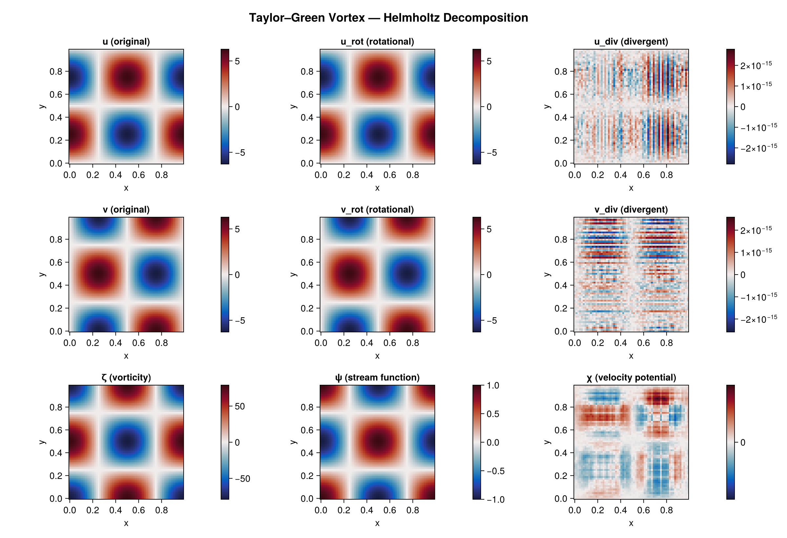
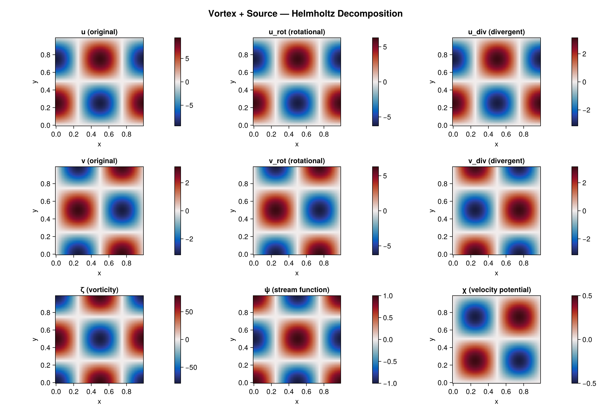
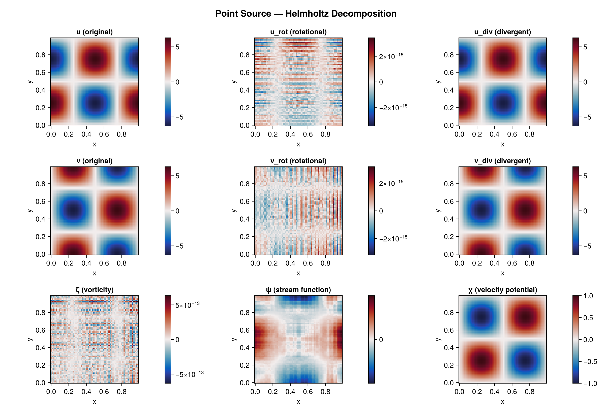
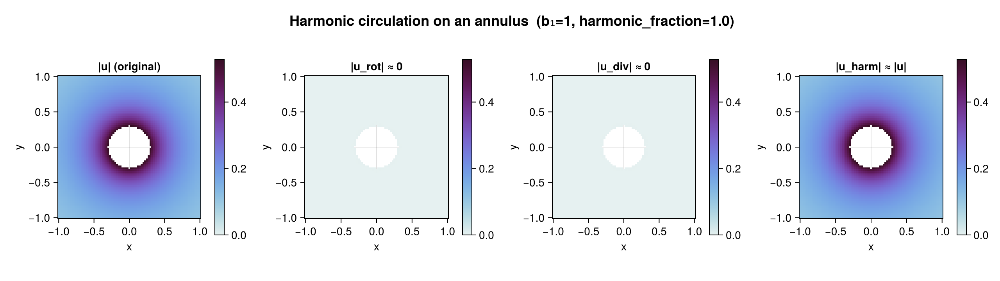
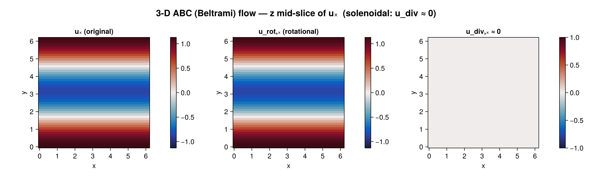
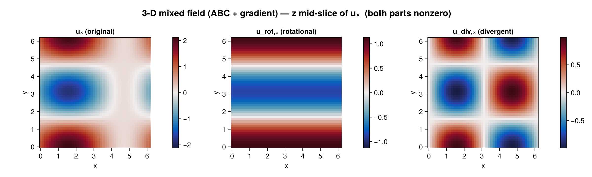
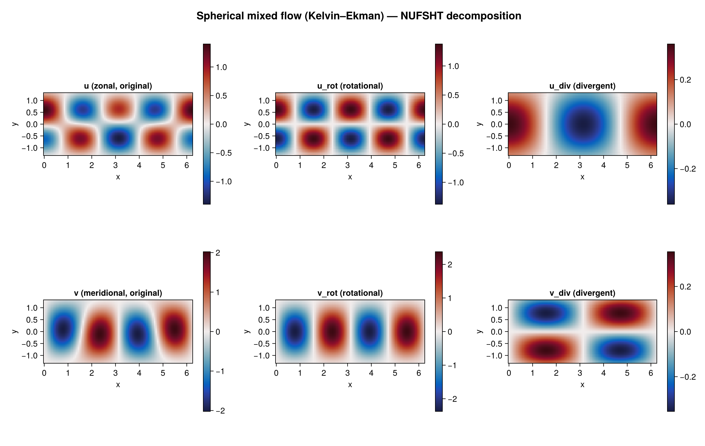

Examples
Visual Results
Taylor-Green Vortex (purely rotational)

Vortex + Source (mixed rotational and divergent)

Point Source (purely divergent)

Harmonic circulation on an annulus (multiply-connected)

3-D ABC (Beltrami) flow — z mid-slice

3-D mixed field — z mid-slice

Spherical mixed flow (Kelvin–Ekman, NUFSHT)

Velocity-like result fields use a component-last layout (dims..., N); index the last axis (or use cat(u, v; dims=3) to build inputs). Runnable scripts live in examples/.
Cartesian: pure rotational field (Taylor–Green vortex)
using HelmholtzDecomposition: HelmholtzDecomposition as HD
using FlowGeometries: FlowGeometries as FG
using FFTW: FFTW
N, L = 64, 1.0
axis = FG.Axes.UniformAxis(0.0, L / N, N)
grid = FG.Grids.StructuredGrid(FG.Geometry.CartesianGeometry{Float64}(), axis, axis;
topology = (true, true), period = (L, L))
U = cat(u, v; dims = 3) # component-last (dims..., N)
result = HD.helmholtz_decompose(U, grid)
@assert maximum(abs, result.u_div) < 1e-14 # divergent component ≈ 0Uniformity is read from the axis TYPE, never by scanning values, so a collected axis is not provably uniform and no direct transform applies to it. UniformAxis is also isbits, so a grid built from one moves to a device for free.
The residue in result.harmonic_fraction on a smooth field is the two collocated↔staggered averaging hops and falls at second order — 9.6e-3 at N = 32, 6.0e-4 at N = 128. It is discretisation, not topology.
Reusing a plan
helmholtz_decompose(u, grid) builds a plan, a workspace and a result and throws them away. For more than one field on a grid, build them once — the steady-state call then allocates nothing.
plan = HD.plan_helmholtz(grid; boundary = HD.Neumann())
ws = HD.allocate_workspace(plan)
res = HD.allocate_result(plan)
for u in fields
HD.helmholtz_decompose!(res, u, plan, ws) # 0 bytes
endBatches
A HelmholtzBatch stores every output contiguously with the batch axis last, and batch[b] is a result of views onto slice b.
using OhMyThreads: OhMyThreads # enables ThreadedBackend
using ComputationalBackends: ComputationalBackends as CB
batch = HD.helmholtz_decompose_batch(plan, fields; backend = CB.ThreadedBackend())
size(batch.u_rot) # (dims..., N, length(fields))
batch[3].harmonic_fractionDistributed and MPI spread the same batch across processes or ranks. A backend that is named but whose extension is not loaded throws; it is never quietly downgraded to serial.
3-D: ABC (Beltrami) flow
# U3 is component-last (Nx, Ny, Nz, 3)
res3 = HD.helmholtz_decompose(U3, grid3)
A1, A2, A3 = HD.vector_potential(res3) # the 3-D vector potentialSpherical: Rossby wave (non-divergent)
NLON, NLAT = 128, 64
λ = FG.Axes.UniformAxis(0.0, 2π / NLON, NLON)
φ = FG.Axes.UniformAxis(-π / 2 + π / (2NLAT), π / NLAT, NLAT)
grid = FG.Grids.StructuredGrid(FG.Geometry.SphericalGeometry(6.371e6), λ, φ;
topology = (true, false), period = (2π, nothing))
result = HD.helmholtz_decompose(cat(u, v; dims = 3), grid)A lat–lon grid is not a transform's node set, so it takes the multigrid-preconditioned iterative path. Load FastSphericalHarmonics for a Clenshaw–Curtis grid, or NUFSHT for any node set covering the sphere. A regional patch stays on the iterative solver: spherical-harmonic analysis integrates over all of S², so a patch does not determine the solution even on the patch.
Coarse-Graining Workflow
result = HD.helmholtz_decompose(cat(u, v; dims = 3), grid)
# Filter the scalar potentials (use your filtering package) — this is what commutes with ∇.
ψ_filtered = your_filter(HD.streamfunction(result), grid, filter_scale)
χ_filtered = your_filter(result.χ, grid, filter_scale)
# Reconstruct velocity from the filtered potentials.